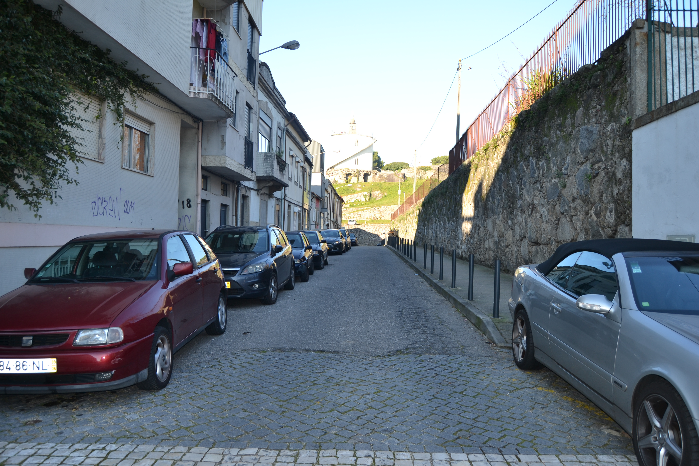
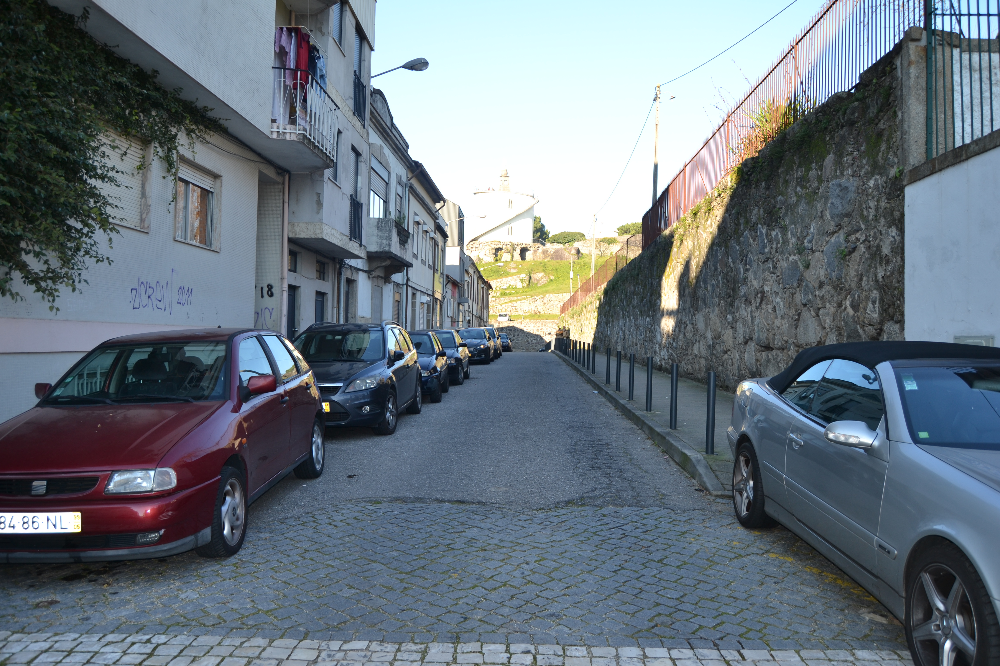

52 Rua em Frente de Nossa Senhora de Guadalupe
Troço da Cangosta de Guadalupe , situado em frente à capela do mesmo nome.
Parcialmente construído em 1725 , tinha, 25 anos mais tarde, ainda 3 «chãos».
Um significativo espaço era ocupado por um grande quintal e pela fachada lateral
de uma casa da rua de Nossa Senhora de Guadalupe , o que mostra bem a
subalternização total desta rua.
As 5 casas construídas eram extremamente simples e tinham as janelas vazadas.
Todos esses prédios estavam emprazados ao Cabido .
Chama-se actualmente rua de Guadalupe .
Pequena artéria, mais parecida com uma cangosta, ligava a igreja de S. Vicente
com a capela de Guadalupe .
Rua de arrabalde , na vertente Noroeste do então chamado monte de Santa Margarida ,
tinha do lado Norte — o único representado no Mappa, onze habitações
de um piso e duas de dois. Essas casas eram muito simples, do tipo com porta
ladeada de janela. No extremo Este está uma casa de pedra, de dois pisos, bem
definida por fortes pilastras, que tem a ladeá-la um bonito, mas singelo, portão
de pedra.
Na década de 60 do séc. XVIII , a rua sofreu uma alteração de traçado -
que é o que actualmente se vê - devido à construção, neste local, do convento e capela das Teresinhas ,
facto que motivou a amortização dos prazos 1 a 8.
Das 13 casas representadas no Mappa, 9 eram foreiras do cabido .
Desde 5 de Junho de 1880 passou, oficialmente, a chamar-se rua de Camões .
Visão original


Visão atual
 

Casas
1 Vid. casa n.º9 da rua de N. Sr.ª de Guadalupe. Pertence à casa n.° 17 da Rua de N. Sra. de Guadalupe , para onde tem frontaria e serventia principais. Poente
2 Quintal da casa n.° 1. Poente
3, 4 e 5 Vid. casa n.º9 da rua de N. Sr.ª de Guadalupe. Silvestre de Oliveira , jornaleiro, casado com Inês Dantas , paga 2000 reis, pelo chão n.° 3 e pelos n.º 4 e 5, ao subenfiteuta da casa n.° 9 da Rua de N. Sra. de Guadalupe . Poente
6 Portal de serventia do quintal que anda subemprazado juntamente com a casa n.° 9 da Rua N. Sra. de Guadalupe . Poente
7 a 9 D. Agostinha Maria de Barros Gavião, enfiteuta principal do prazo do casal dos Chãos ou Quinteiro. Pertencem ao casal dos Chãos ou Quinteiro , a cujo enfiteuta se paga foro. Nos livros dos prazos do cabido não se encontram escrituras se subemprazamento Poente
10 e 11 D. Agostinha Maria de Barros Gavião, enfiteuta principal do prazo do casal dos Chãos ou Quinteiro. Chãos de casa do prazo do casal dos Chãos ou Quinteiro . Poente
1, 2, 3 e 4 Jácome Borges Pereira Pacheco, enfiteuta principal do prazo do casal de Infias ou Flores. Paulo Francisco , ferreiro, casado com Jerónima da Silva , paga 400 reis ao enfiteuta do prazo do casal de Infias ou Flores . Só parte do n.° 1 é foreiro ao cabido . Norte
5, 6 e 7 Jácome Borges Pereira Pacheco, enfiteuta principal do prazo do casal de Infias ou Flores. João da Costa , cutileiro, casado com Maria Ferreira , paga 400 reis ao enfiteuta do prazo do casal de Infias e Flores , conforme o subemprazamento de 1720 . No ano de 1729 foram feitas escrituras subalternas dos n.° 6 e 7. Só parte do n.° 7 é deste subenfiteuta. Norte
7 e 8 Vid. casa n.º 5. Garcia Fernandes , casado com Narcisa Francisca , paga 600 reis ao subenfiteuta da casa n.° 5. Só parte do n.° 7 é deste subenfiteuta. Norte
9 Jácome Borges Pereira Pacheco, enfiteuta principal do prazo do casal de Infias ou Flores. Paga foro ao enfiteura do prazo do casal de Infias ou Flores . Norte
10 Jácome Borges Pereira Pacheco, enfiteuta principal do prazo do casal de Infias ou Flores. Paga foro ao enfiteuta do prazo do casal de Infias ou Flores . Confronta, do nascente, com casa foreira à confraria de S. João do Souto . Norte